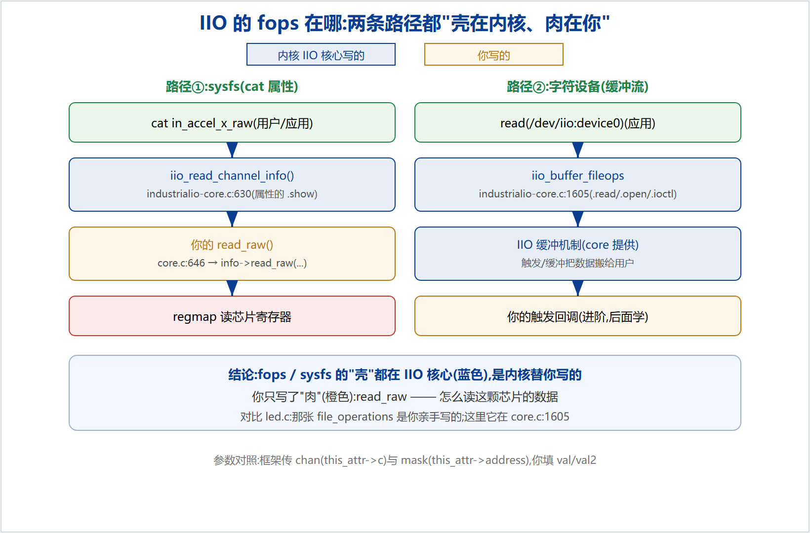

在经典字符设备驱动(如 LED)里,你要亲手写 file_operations(.open/.read/.write)、register_chrdev、建 /dev 节点。但在我们的 MPU-6050 IIO 驱动里,整份代码看不到一个 file_operations,只写了 read_raw 和通道数组。这是为什么?数据到底怎么从用户的 cat 流到你的芯片?
read_raw),框架的 fops/sysfs 外壳会在需要数据时回调它。
第 630 行起,这个函数是每个通道属性(如 in_accel_x_raw)的 .show 处理函数——内核写的:
630 static ssize_t iio_read_channel_info(struct device *dev,
631 struct device_attribute *attr, char *buf)
632 {
634 struct iio_dev *indio_dev = dev_to_iio_dev(dev);
635 struct iio_dev_attr *this_attr = to_iio_dev_attr(attr);
...
646 ret = indio_dev->info->read_raw(indio_dev, this_attr->c,
647 &vals[0], &vals[1], this_attr->address); // ← 回调【你的】read_raw
...
652 return iio_format_value(buf, ret, val_len, vals); // 把值格式化成字符串给用户
653 }
第 646 行的 indio_dev->info->read_raw(...) —— 这就是在调用你写的 read_raw。参数正好对上你的函数签名:
| 框架传入(内核) | 你的 read_raw 形参 | 含义 |
|---|---|---|
this_attr->c | chan | 哪个通道(accel-X…) |
&vals[0] / &vals[1] | val / val2 | 你把结果写回这里 |
this_attr->address | mask | 要 RAW 还是 SCALE |
第 1068 行,框架在"自动生成通道属性"时,把上面这个函数挂成了属性的 .show:
1068 &iio_read_channel_info, // 生成的 in_accel_*_raw 等属性的 .show 回调
所以链路是:cat in_accel_x_raw → 内核 sysfs → iio_read_channel_info(.show)→ 你的 read_raw。
第 1605 行,/dev/iio:deviceN 的 file_operations——同样是内核写的:
1605 static const struct file_operations iio_buffer_fileops = {
1606 .read = iio_buffer_read_first_n_outer_addr,
1607 .release = iio_chrdev_release,
1608 .open = iio_chrdev_open,
1609 .poll = iio_buffer_poll_addr,
1612 .unlocked_ioctl = iio_ioctl,
1613 .compat_ioctl = iio_ioctl,
1614 };
.open / .read / .release / .poll / .ioctl —— 这正是你在 LED 驱动里亲手写的那种 file_operations。区别只是:LED 里是你写的;IIO 里它在 industrialio-core.c:1605,内核替你写好了,你一个字没碰。| LED 手动字符设备 | 你的 IIO 驱动 | |
|---|---|---|
| file_operations | 你写(.open/.read/.write) | 内核写(core.c:1605 iio_buffer_fileops) |
| sysfs 属性的 .show | —(没用 sysfs) | 内核写(core.c:630 iio_read_channel_info) |
| 建 /dev 节点 | 你 register_chrdev / device_create | IIO 自动建 /dev/iio:deviceN |
| 生成属性文件 | — | IIO 按你的通道自动生成 in_accel_*_raw |
| 你真正写的 | 全部管道 | 只有 iio_chan_spec + read_raw |
两条取数据的路径——sysfs(cat 属性)和字符设备(read /dev/iio:deviceN)——它们的"外壳"(fops、sysfs 的 show、建节点、生成属性)全在 IIO 核心里,是内核替你写好的。你的驱动只提供"芯片特有的那一小块":read_raw(怎么读这颗芯片的数据)。框架在需要数据时回调它。
想亲眼验证,在你的内核源码树里看这个文件即可:
drivers/iio/industrialio-core.c :630 iio_read_channel_info() # sysfs 读,回调你的 read_raw :646 indio_dev->info->read_raw() # 回调点 :1068 .show = &iio_read_channel_info :1605 iio_buffer_fileops # /dev/iio:deviceN 的 file_operations
本文基于 Linux 5.4 内核源码(行号随版本略有差异)。配套仓库:github.com/fyy0619-cell/xiangmu